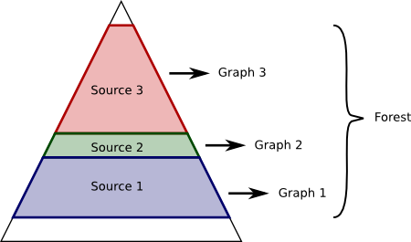

| Forest.pm | |
| ROK4:: | |
| Constructors | |
| new | Forest constructor. |
| _load | Creates a ROK4::PREGENERATION::NNGraph or a ROK4::PREGENERATION::QTree object per data source. |
| Graphs tools | |
| containsNode | Returns a boolean : TRUE if the node belong to this forest, FALSE otherwise (if a parameter is not defined too). |
| computeGraphs | Computes each ROK4::PREGENERATION::NNGraph or ROK4::PREGENERATION::QTree one after the other and closes scripts to finish. |
| Getters - Setters | |
| getGraphs | |
| getPyramid | |
| getScripts |
(see libperlauto/ROK4_Core_Forest.png)
Creates and manages all graphs, NNGraph and QTree.
We have several kinds of graphs and their using have to be transparent for the forest. That’s why we must define functions for all graph’s types (as an interface) :
use ROK4::PREGENERATION::Forest
my $Forest = ROK4::PREGENERATION::Forest->new(
$objPyramid, # a ROK4::Core::PyramidRaster or ROK4::Core::PyramidVector object
$objDSL, # a ROK4::PREGENERATION::SourceLoader object
$param_process, # a hash with following keys : job_number, path_temp, path_temp_common and path_shell
);| pyramid | ROK4::Core::PyramidRaster or ROK4::Core::PyramidVector - Images’ pyramid to generate, thanks to one or several graphs. |
| graphs | ROK4::PREGENERATION::QTree or ROK4::PREGENERATION::NNGraph array - Graphs composing the forest, one per data source. |
| scripts | ROK4::PREGENERATION::Script array - Scripts, whose execution generate the images’ pyramid. |
| splitNumber | integer - Number of script used for work parallelization. |
| Constructors | |
| new | Forest constructor. |
| _load | Creates a ROK4::PREGENERATION::NNGraph or a ROK4::PREGENERATION::QTree object per data source. |
| Graphs tools | |
| containsNode | Returns a boolean : TRUE if the node belong to this forest, FALSE otherwise (if a parameter is not defined too). |
| computeGraphs | Computes each ROK4::PREGENERATION::NNGraph or ROK4::PREGENERATION::QTree one after the other and closes scripts to finish. |
| Getters - Setters | |
| getGraphs | |
| getPyramid | |
| getScripts |
sub new
Forest constructor. Bless an instance.
| pyramid | ROK4::Core::PyramidRaster or ROK4::Core::PyramidVector - Output pyramid, generated by this forest. |
| sources | ROK4::PREGENERATION::Source array reference - List of data sources |
| params | hash reference - All configuration |
sub _load
Creates a ROK4::PREGENERATION::NNGraph or a ROK4::PREGENERATION::QTree object per data source. Using a QTree is faster but it does’nt match all cases.
All differences between different kinds of graphs are handled in respective classes, in order to be imperceptible for users.
Only scripts creation and initial organization are managed by the forest.
| sources | ROK4::PREGENERATION::Source array reference - List of data sources |
| params | hash reference - Process configuration |
sub containsNode
Returns a boolean : TRUE if the node belong to this forest, FALSE otherwise (if a parameter is not defined too).
| level | string - Level ID of the node we want to know if it is in the forest. |
| col | integer - Column of the node we want to know if it is in the forest. |
| row | integer - Row of the node we want to know if it is in the forest. |
sub computeGraphs
Computes each ROK4::PREGENERATION::NNGraph or ROK4::PREGENERATION::QTree one after the other and closes scripts to finish.
ROK4::PREGENERATION::NNGraph::computeYourself, ROK4::PREGENERATION::QTree::computeYourself
Forest constructor.
sub new
Creates a ROK4::PREGENERATION::NNGraph or a ROK4::PREGENERATION::QTree object per data source.
sub _load
Returns a boolean : TRUE if the node belong to this forest, FALSE otherwise (if a parameter is not defined too).
sub containsNode
Computes each ROK4::PREGENERATION::NNGraph or ROK4::PREGENERATION::QTree one after the other and closes scripts to finish.
sub computeGraphs
sub getGraphs
sub getPyramid
sub getScripts
Browse graph and write commands in different scripts.
sub computeYourself
Browse graph and write scripts.
sub computeYourself
Returns a boolean : TRUE if the node belong to this tree, FALSE otherwise (if a parameter is not defined too).
sub containsNode
Returns a boolean : TRUE if the node belong to this tree, FALSE otherwise (if a parameter is not defined too).
sub containsNode